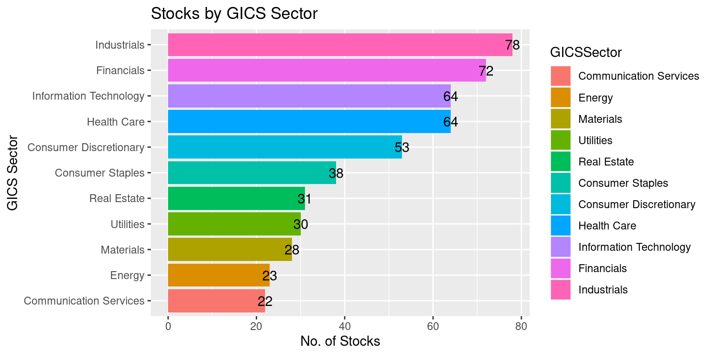
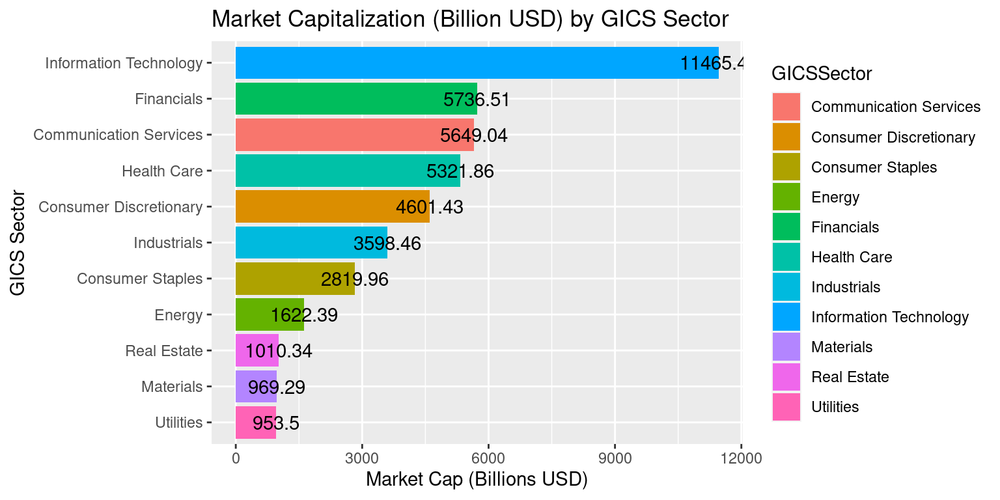

# Load the required libraries, suppressing annoying startup messages
library(dplyr, quietly = TRUE, warn.conflicts = FALSE) # For data manipulation
library(tibble, quietly = TRUE, warn.conflicts = FALSE) # For data manipulation
library(ggplot2, quietly = TRUE, warn.conflicts = FALSE) # For data visualization
library(ggpubr, quietly = TRUE, warn.conflicts = FALSE) # For data visualization
library(gsheet, quietly = TRUE, warn.conflicts = FALSE) # For Google Sheets
library(rmarkdown, quietly = TRUE, warn.conflicts = FALSE) # For writing
library(knitr, quietly = TRUE, warn.conflicts = FALSE) # For tables
library(kableExtra, quietly = TRUE, warn.conflicts = FALSE) # For tables
library(scales) # For formatting currencyCase (1 of 2): An Overview of the S&P500
Chapter 17, Last updated: Jan 06, 2024
S&P 500
The S&P 500, also called the Standard & Poor’s 500, is a stock market index that tracks the performance of 500 major publicly traded companies listed on U.S. stock exchanges. It serves as a widely accepted benchmark for assessing the overall health and performance of the U.S. stock market.
S&P Dow Jones Indices, a division of S&P Global, is responsible for maintaining the index. The selection of companies included in the S&P 500 is determined by a committee, considering factors such as market capitalization, liquidity, and industry representation.
The S&P is a float-weighted index, meaning the market capitalizations of the companies in the index are adjusted by the number of shares available for public trading. [1]
The performance of the S&P 500 is frequently used to gauge the broader stock market and is commonly referenced by investors, analysts, and financial media. It provides a snapshot of how large-cap U.S. stocks are faring and is considered a reliable indicator of overall market sentiment.
Aside: Typically, the S&P 500 index consists of 500 stocks. However, in reality, there are actually 503 stocks included. This discrepancy arises because three of the listed companies have multiple share classes, and each class is considered a separate stock that needs to be included in the index. [1]
Strengths:
Diverse Representation: The S&P 500 isn’t fixated on a single industry. From technology to healthcare, it offers a panoramic view of various economic sectors, making it an inclusive representation of the U.S. corporate sector.
Benchmark for Investors: For many fund managers, outperforming the S&P 500 stands as a golden standard. It’s a yardstick, establishing it as a critical touchstone for gauging investment success.
Liquidity and Visibility: Constituent companies enjoy high liquidity and are subject to rigorous screening processes, ensuring that the index represents financially viable entities.
Critiques:
Market Capitalization Weighting: The index is weighted by market capitalization, meaning companies with higher market values have a more pronounced effect on its performance. Critics argue this approach can skew perceptions, especially during market bubbles when certain sectors are overvalued.
Exclusivity: Despite its broad purview, 500 companies cannot encapsulate the entire U.S. economy. Many sectors, especially emerging industries or smaller businesses, might not be adequately represented.
Potential for Complacency: The prominence of the S&P 500 has led many investors to adopt passive investment strategies, tracking the index rather than actively managing portfolios. Detractors argue this might lead to market inefficiencies and reduced capital allocation efficacy.
While the S&P 500 remains an influential and pivotal tool for investors, its dominance prompts a double-edged sword of advantages and critiques. In a constantly evolving economic landscape, understanding both its power and limitations is essential for informed financial decision-making. [2]
The broad purpose of this Case Study is to review and analyze the different sectors and stocks within the S&P500.
S&P 500 Data
Load some useful R packages
Read the S&P500 data from a Google Sheet into a tibble
We will analyze a real-world, recent dataset containing information about the S&P500 stocks, sourced from TradingView.com. [3]
The dataset is located in a Google Sheet and periodically updated.
The complete URL of the Google Sheet that has the data is
https://docs.google.com/spreadsheets/d/14mUlNNpeuV2RouT9MKaAWKUpvjRijzQu40DdWJgyKPQ/
Its Google Sheet ID is:
14mUlNNpeuV2RouT9MKaAWKUpvjRijzQu40DdWJgyKPQ.
Loading the data into R
- We can use the function
gsheet2tblin packagegsheetto read the Google Sheet into a tibble , as demonstrated in the following code.
# Read S&P500 stock data present in a Google Sheet.
library(gsheet)
prefix <- "https://docs.google.com/spreadsheets/d/"
sheetID <- "14mUlNNpeuV2RouT9MKaAWKUpvjRijzQu40DdWJgyKPQ"
url500 <- paste(prefix,sheetID) # Form the URL to connect to
sp500Data <- gsheet2tbl(url500) # Read it into a tibble called sp500Data- Note: This data is current, as of Fri, Jan 5, 2024
S&P Global Industry Classification Standard (GICS®)
- In this case study, we will classify and analyze the S&P 500 stocks based on the GICS standard!
- The Global Industry Classification Standard (GICS®) was developed in 1999 by S&P Dow Jones Indices and MSCI. The GICS methodology aims to enhance the investment research and asset management process for financial professionals worldwide. The GICS methodology has been widely accepted as an industry analysis framework for investment research, portfolio management and asset allocation. [4]
- The GICS classification consists of 11 sectors, – {Communication Services, Consumer Discretionary, Consumer Staples, Energy, Financials, Health Care, Industrials, Information Technology, Materials, Real Estate, Utilities}. The classification of each stock in the S&P 500 according to GICS is available at the following Google Sheet:
https://docs.google.com/spreadsheets/d/1WrVA8dPYvQsc_mXVctgTntRLS02qd7ubzcdAsw03Lgk/
- For this file, the Google Sheet ID is
1WrVA8dPYvQsc_mXVctgTntRLS02qd7ubzcdAsw03Lgkand we read this classification data into a tibble, we namegics, using similar code.
# Read GICS classificaiton of S&P 500 stocks from a Google Sheet.
library(gsheet)
prefix2 <- "https://docs.google.com/spreadsheets/d/"
sheetID2 <- "1WrVA8dPYvQsc_mXVctgTntRLS02qd7ubzcdAsw03Lgk"
urlgics <- paste(prefix2, sheetID2) # Form the URL to connect to
gics <- gsheet2tbl(urlgics) # Read it into a tibble called gics- Next, we join the two tibbles, using “Stock” as the key and name our joint tibble
sp500, as follows.
# Merging dataframes
sp500 <- merge(sp500Data,
gics ,
id = "Stock")Review the S&P 500 data
- The data corresponds to 503 companies that are part of the S&P500 and includes 39 data columns, as of Fri, Jan 5, 2024
dim(sp500)[1] 503 39- The first ten stocks in the S&P500 data, their GICS Sector and their recent prices are as follows:
sp500 %>%
select(Stock, Description, GICSSector) %>%
head(10) %>%
kable("html", caption = "The first 10 companies in the S&P500 dataset") %>%
kable_styling()| Stock | Description | GICSSector |
|---|---|---|
| A | Agilent Technologies, Inc. | Health Care |
| AAL | American Airlines Group, Inc. | Industrials |
| AAPL | Apple Inc. | Information Technology |
| ABBV | AbbVie Inc. | Health Care |
| ABNB | Airbnb, Inc. | Consumer Discretionary |
| ABT | Abbott Laboratories | Health Care |
| ACGL | Arch Capital Group Ltd. | Financials |
| ACN | Accenture plc | Information Technology |
| ADBE | Adobe Inc. | Information Technology |
| ADI | Analog Devices, Inc. | Information Technology |
- Data Columns
- The data comprises of the following 39 columns:
colnames(sp500) [1] "Stock"
[2] "Date"
[3] "Description"
[4] "Sector"
[5] "Industry"
[6] "Market Capitalization"
[7] "Price"
[8] "52 Week Low"
[9] "52 Week High"
[10] "Return on Equity (TTM)"
[11] "Return on Assets (TTM)"
[12] "Return on Invested Capital (TTM)"
[13] "Gross Margin (TTM)"
[14] "Operating Margin (TTM)"
[15] "Net Margin (TTM)"
[16] "Price to Earnings Ratio (TTM)"
[17] "Price to Book (FY)"
[18] "Enterprise Value/EBITDA (TTM)"
[19] "EBITDA (TTM)"
[20] "EPS Diluted (TTM)"
[21] "EBITDA (TTM YoY Growth)"
[22] "EBITDA (Quarterly YoY Growth)"
[23] "EPS Diluted (TTM YoY Growth)"
[24] "EPS Diluted (Quarterly YoY Growth)"
[25] "Price to Free Cash Flow (TTM)"
[26] "Free Cash Flow (TTM YoY Growth)"
[27] "Free Cash Flow (Quarterly YoY Growth)"
[28] "Debt to Equity Ratio (MRQ)"
[29] "Current Ratio (MRQ)"
[30] "Quick Ratio (MRQ)"
[31] "Dividend Yield Forward"
[32] "Dividends per share (Annual YoY Growth)"
[33] "Price to Sales (FY)"
[34] "Revenue (TTM YoY Growth)"
[35] "Revenue (Quarterly YoY Growth)"
[36] "Technical Rating"
[37] "Security"
[38] "GICSSector"
[39] "GICSSubIndustry" - The names of the data columns are self-explanatory. The Financial terms are explained in depth on multiple external websites such as www.Investopedia.com
Rename Data Columns
- The names of the data columns are lengthy and confusing. We will rename the data columns to make it easier to work with the data.
# Define a mapping of new column names
new_names <- c(
"Stock", "Date", "StockName", "Sector", "Industry",
"MarketCap", "Price", "Low52Wk", "High52Wk",
"ROE", "ROA", "ROIC", "GrossMargin",
"OperatingMargin", "NetMargin", "PE",
"PB", "EVEBITDA", "EBITDA", "EPS",
"EBITDA_YOY", "EBITDA_QYOY", "EPS_YOY",
"EPS_QYOY", "PFCF", "FCF",
"FCF_QYOY", "DebtToEquity", "CurrentRatio",
"QuickRatio", "DividendYield",
"DividendsPerShare_YOY", "PS",
"Revenue_YOY", "Revenue_QYOY", "Rating",
"Security", "GICSSector", "GICSSubIndustry"
)
# Rename the columns using the new_names vector
colnames(sp500)<-new_names- We review the column names again after renaming them, using the
colnames()function.
colnames(sp500) [1] "Stock" "Date" "StockName"
[4] "Sector" "Industry" "MarketCap"
[7] "Price" "Low52Wk" "High52Wk"
[10] "ROE" "ROA" "ROIC"
[13] "GrossMargin" "OperatingMargin" "NetMargin"
[16] "PE" "PB" "EVEBITDA"
[19] "EBITDA" "EPS" "EBITDA_YOY"
[22] "EBITDA_QYOY" "EPS_YOY" "EPS_QYOY"
[25] "PFCF" "FCF" "FCF_QYOY"
[28] "DebtToEquity" "CurrentRatio" "QuickRatio"
[31] "DividendYield" "DividendsPerShare_YOY" "PS"
[34] "Revenue_YOY" "Revenue_QYOY" "Rating"
[37] "Security" "GICSSector" "GICSSubIndustry" Understand the Data Columns
- Our next goal is to gain a deeper understanding of what the data columns mean. We reorganize the column names into eight tables, labeled Table 1a, 1b.. 1h.
- The column names described in Table 1a. concern basic Company Information of each stock.
| ColumnName | Description |
|---|---|
| Stock | Stock Ticker (e.g. AAL) |
| Date | Date (e.g. "7/15/2023") |
| StockName | Name of the company (e.g "American Airlines Group, Inc.") |
| GICSSector | Sector, as per GICS Classification |
| GICSSubIndustry | Sub-Industry, as per GICS Classification |
| MarketCap | Market capitalization of the company |
| Price | Recent Stock Price |
- The column names described in Table 1b. are related to Technical Analysis, including the 52-Week High and Low prices.
| ColumnName | Description |
|---|---|
| Low52Wk | 52-Week Low Price |
| High52Wk | 52-Week High Price |
| Rating | Technical Rating |
- The column names described in Table 1c. are related to the Profitability of each stock.
| ColumnName | Description |
|---|---|
| ROE | Return on Equity |
| ROA | Return on Assets |
| ROIC | Return on Invested Capital |
| GrossMargin | Gross Profit Margin |
| OperatingMargin | Operating Profit Margin |
| NetMargin | Net Profit Margin |
- The column names described in Table 1d are related to the Earnings of each stock.
| ColumnName | Description |
|---|---|
| PE | Price-to-Earnings Ratio |
| PB | Price-to-Book Ratio |
| EVEBITDA | Enterprise Value to EBITDA Ratio |
| EBITDA | EBITDA |
| EPS | Earnings per Share |
| EBITDA_YOY | EBITDA Year-over-Year Growth |
| EBITDA_QYOY | EBITDA Quarterly Year-over-Year Growth |
| EPS_YOY | EPS Year-over-Year Growth |
| EPS_QYOY | EPS Quarterly Year-over-Year Growth |
- The column names described in Table 1e are related to the Free Cash Flow of each stock.
| ColumnName | Description |
|---|---|
| PFCF | Price-to-Free Cash Flow |
| FCF | Free Cash Flow |
| FCF_QYOY | Free Cash Flow Quarterly Year-over-Year Growth |
- The column names described in Table 1f concern the Liquidity of each stock.
| ColumnName | Description |
|---|---|
| DebtToEquity | Debt-to-Equity Ratio |
| CurrentRatio | Current Ratio |
| QuickRatio | Quick Ratio |
- The column names described in Table 1g are related to the Revenue of each stock.
| ColumnName | Description |
|---|---|
| PS | Price-to-Sales Ratio |
| Revenue_YOY | Revenue Year-over-Year Growth |
| Revenue_QYOY | Revenue Quarterly Year-over-Year Growth |
- The column names described in Table 1h are related to the Dividends of each stock.
| ColumnName | Description |
|---|---|
| DividendYield | Dividend Yield |
| DividendsPerShare_YOY | Annual Dividends per Share Year-over-Year Growth |
Stock Prices, 52-Week Low, High; Market Cap in Billions
We want to analyze stock prices relative to their 52 Week Low and 52 Week High respectively, to understand their relative price attractiveness.
Hence, a new column named Low52WkPerc is being added. The column contains the percentage change between the current price (Price) and its 52-week low (Low52Wk). The formula used is: \[Low52WkPerc = \frac{(CurrentPrice - 52WeekLow)*100}{52WeekLow}\]
Another column named High52WkPerc represents the percentage change between the 52-week high (High52Wk) and the current price (Price). We round off the data to two decimal places for clarity.
library(dplyr)
sp500 <- sp500 %>%
mutate(Low52WkPerc = round((Price - Low52Wk) * 100 / Low52Wk, 2),
High52WkPerc = round((High52Wk - Price) * 100 / High52Wk, 2),
MarketCapBillions = round(MarketCap / 1e9, 3) # Convert MarketCap to billions
)For convenience, we format the Prices.
library(dplyr)
library(scales) # For formatting currency
sp500 <- sp500 %>%
mutate(
Price = scales::dollar(round(Price, 2)), # format the Price as a dollar amount
High52Wk = scales::dollar(round(High52Wk, 2)), # format the 52 Week High
Low52Wk = scales::dollar(round(Low52Wk, 2)) # format the 52 Week Low
)Analysis of Stock Ratings
- In the data, the S&P500 shares have Technical Ratings such as {Strong Buy, Buy, Neutral, Sell, Strong Sell}. Since each Stock has a unique Technical Rating, it makes sense to model the data column Rating as a
factor()variable.
sp500$Rating <- as.factor(sp500$Rating)- We confirm that Rating is now modelled as a factor variable, using
str()and uselevels()to review the different levels it can take.
str(sp500$Rating) Factor w/ 5 levels "Buy","Neutral",..: 1 1 3 4 1 3 3 4 2 3 ...levels(sp500$Rating)[1] "Buy" "Neutral" "Sell" "Strong Buy" "Strong Sell"- The
table()function allows us to count how many stocks have each Rating. see how many stocks have ratings ranging from “Strong Sell” to “Strong Buy”. This completes our review of Rating.
table(sp500$Rating)
Buy Neutral Sell Strong Buy Strong Sell
192 51 178 58 24 Analysis of GICS Sectors in the S&P500
The S&P 500 comprises a wide array of sectors, reflecting the diverse American corporate landscape.
The data showcases the S&P500 divided across 11 Sectors. Each stock belongs to a unique sector and it makes sense to model
GICSSectoras afactor.
sp500$GICSSector <- as.factor(sp500$GICSSector)- We confirm that
GICSSectoris now modelled as a factor variable and review the different levels it can take.
str(sp500$GICSSector) Factor w/ 11 levels "Communication Services",..: 6 7 8 6 2 6 5 8 8 8 ...levels(sp500$GICSSector) [1] "Communication Services" "Consumer Discretionary" "Consumer Staples"
[4] "Energy" "Financials" "Health Care"
[7] "Industrials" "Information Technology" "Materials"
[10] "Real Estate" "Utilities" - We note that the S&P500 consists of 503 stocks, divided across 11 sectors.
library(ggplot2) # For creating plots
library(dplyr) # For data manipulation
sp500 %>%
mutate(
# Reorder the 'GICSSector' factor levels based on the count of each sector
# 'table(GICSSector)[GICSSector]' calculates the frequency of each sector
# 'reorder' reorders the levels of 'GICSSector' based on these frequencies
GICSSector = reorder(GICSSector,
table(GICSSector)[GICSSector])
) %>%
# Start a ggplot with 'GICSSector' on the y-axis
ggplot(aes(y = GICSSector)) +
# Create a bar plot; 'geom_bar' counts the frequency for each sector
# 'fill = GICSSector' colors the bars based on the sector
geom_bar(aes(fill = GICSSector)) +
# Add text labels on the bars showing the count of stocks in each sector
# 'stat = "count"' calculates the count for each sector
# 'label = after_stat(count)' adds these counts as labels on the bars
geom_text(stat = 'count',
aes(label = after_stat(count))) +
labs(title = "Stocks by GICS Sector", # Title of the plot
x = "No. of Stocks", # Label for the x-axis
y = "GICS Sector") # Label for the y-axis
- Thus, we can see how many stocks are part of each sector. We can sum them to confirm that they add up to 503 stocks.
MarketCap by GICS Sector
- We review the Market Cap of S&P500 stocks across GICS Sectors. We summarize the total Market Cap for each GICS Sector, using the following code.
# Calculate Market Cap by Sector
MarketCapbySector <- sp500 %>%
mutate(Market_Cap_Billions = round(MarketCap / 1000000000, 2)) %>%
group_by(GICSSector) %>%
summarise(MarketCapBillions = sum(Market_Cap_Billions, na.rm = TRUE)) %>%
arrange(-MarketCapBillions)- We create a bar plot of Market Cap by GICS Sector
# Create a bar plot of Market Cap by GICS Sector,
ggplot(MarketCapbySector,
aes(y = reorder(GICSSector,
MarketCapBillions), # Y-axis: GICSSector reordered
x = MarketCapBillions, # X-axis: Market Capitalization in billions
fill = GICSSector)) + # Fill color of the bars based on GICSSector
geom_bar(stat = "identity") + # 'stat = "identity"' to use MarketCapBillions for bars
labs(title = "Market Capitalization (Billion USD) by GICS Sector",
y = "GICS Sector", # Label for the y-axis
x = "Market Cap (Billions USD)") + # Label for the x-axis
geom_text(aes(label = MarketCapBillions)) # Add text labels to the bars 
- The S&P500 has a combined Market Cap of 43748.27 Billion USD.
Highest Market Cap Stocks in each GICS Sector
- Suppose we wanted to find the top two stocks with the highest market capitalization in each GICS Sector.
- We could group the data by
GICSSector; arrange the data in descending order ofMarketCapwithin each sector; slice the top 2 entries for each group. Here’s the R code to accomplish this:
# Find the top two stocks by MarketCap in each GICS Sector
top_stocks_by_sector <- sp500 %>%
group_by(GICSSector) %>%
arrange(desc(MarketCap)) %>%
slice_head(n = 2) %>%
ungroup() %>%
arrange(GICSSector) # Arrange the final data by GICSSector
# Select only the specified columns and create a table using kable
top_stocks_by_sector %>%
select(Stock, StockName, GICSSector, MarketCapBillions, Price) %>%
kable("html", caption = "Top Two Stocks by Market Capitalization, by GICS Sector") %>%
kable_styling()| Stock | StockName | GICSSector | MarketCapBillions | Price |
|---|---|---|---|---|
| GOOG | Alphabet Inc. | Communication Services | 1723.840 | $138.64 |
| GOOGL | Alphabet Inc. | Communication Services | 1723.430 | $136.95 |
| AMZN | Amazon.com, Inc. | Consumer Discretionary | 1504.950 | $145.63 |
| TSLA | Tesla, Inc. | Consumer Discretionary | 751.020 | $236.32 |
| WMT | Walmart Inc. | Consumer Staples | 421.765 | $156.74 |
| PG | Procter & Gamble Company (The) | Consumer Staples | 349.243 | $148.14 |
| XOM | Exxon Mobil Corporation | Energy | 412.872 | $103.07 |
| CVX | Chevron Corporation | Energy | 284.572 | $151.22 |
| BRK.B | Berkshire Hathaway Inc. New | Financials | 796.444 | $366.12 |
| V | Visa Inc. | Financials | 523.588 | $260.41 |
| LLY | Eli Lilly and Company | Health Care | 583.748 | $614.92 |
| UNH | UnitedHealth Group Incorporated | Health Care | 499.797 | $540.65 |
| BA | Boeing Company (The) | Industrials | 149.284 | $246.65 |
| CAT | Caterpillar, Inc. | Industrials | 147.054 | $289.00 |
| AAPL | Apple Inc. | Information Technology | 2831.530 | $182.03 |
| MSFT | Microsoft Corporation | Information Technology | 2750.200 | $369.97 |
| LIN | Linde plc | Materials | 198.572 | $409.66 |
| SHW | Sherwin-Williams Company (The) | Materials | 76.078 | $297.26 |
| PLD | Prologis, Inc. | Real Estate | 123.424 | $130.27 |
| AMT | American Tower Corporation (REIT) | Real Estate | 100.440 | $214.56 |
| NEE | NextEra Energy, Inc. | Utilities | 126.878 | $61.84 |
| SO | Southern Company (The) | Utilities | 78.045 | $71.57 |
Stocks rated “Strong Sell”
- Suppose we wanted to list the stocks that have received a Rating of “Strong Sell”.
- Recall that the following code will count the number of Stocks by Rating.
table(sp500$Rating)
Buy Neutral Sell Strong Buy Strong Sell
192 51 178 58 24 - Suppose we want to list the stocks that have “Strong Sell” rating. We can filter the stocks with a Rating of “Strong Sell”; select the columns: Stock, StockName, Price, GICSSector; arrange the resulting data by GICSSector. Accordingly, we can write the following code:
library(dplyr)
library(kableExtra)
strong_sell_stocks <- sp500 %>%
filter(Rating == "Strong Sell") %>%
select(Stock, StockName, Price, GICSSector) %>%
arrange(GICSSector)
strong_sell_stocks %>%
kable("html", caption = "Stocks with a Rating of Strong Sell") %>%
kable_styling()| Stock | StockName | Price | GICSSector |
|---|---|---|---|
| TJX | TJX Companies, Inc. (The) | $92.78 | Consumer Discretionary |
| BF.B | Brown Forman Inc | $55.24 | Consumer Staples |
| HRL | Hormel Foods Corporation | $32.08 | Consumer Staples |
| COP | ConocoPhillips | $116.61 | Energy |
| EQT | EQT Corporation | $37.88 | Energy |
| WMB | Williams Companies, Inc. (The) | $35.76 | Energy |
| AON | Aon plc | $290.69 | Financials |
| FDS | FactSet Research Systems Inc. | $455.56 | Financials |
| ICE | Intercontinental Exchange Inc. | $125.73 | Financials |
| BDX | Becton, Dickinson and Company | $241.70 | Health Care |
| CNC | Centene Corporation | $77.08 | Health Care |
| COO | The Cooper Companies, Inc. | $364.92 | Health Care |
| INCY | Incyte Corporation | $65.43 | Health Care |
| SYK | Stryker Corporation | $297.77 | Health Care |
| VRTX | Vertex Pharmaceuticals Incorporated | $415.27 | Health Care |
| JCI | Johnson Controls International plc | $56.59 | Industrials |
| PWR | Quanta Services, Inc. | $200.01 | Industrials |
| CDW | CDW Corporation | $214.83 | Information Technology |
| IT | Gartner, Inc. | $426.23 | Information Technology |
| ROP | Roper Technologies, Inc. | $523.74 | Information Technology |
| TDY | Teledyne Technologies Incorporated | $436.60 | Information Technology |
| ZBRA | Zebra Technologies Corporation | $252.54 | Information Technology |
| ALB | Albemarle Corporation | $135.26 | Materials |
| STLD | Steel Dynamics, Inc. | $116.12 | Materials |
We could write similar code, if we instead wanted a list of stocks that were rated “Strong Buy”.
With this, we conclude our brief descriptive survey of the S&P500 stocks.
Summary of Chapter 17 – Case (1 of 2): An Overview of the S&P500
This chapter provides a comprehensive case study on the S&P 500, a crucial stock market index tracking 500 major publicly traded companies in the U.S. This study outlines the S&P 500’s structure, managed by S&P Dow Jones Indices, and its role as a benchmark in evaluating the U.S. stock market’s health and performance. Key attributes like the index’s float-weighted nature and its diverse industry representation are discussed.
The study utilizes R programming tools for data manipulation and visualization. Data is sourced from Google Sheets, capturing the most recent information on S&P 500 stocks, and is meticulously loaded, merged, and organized into a tibble for analysis. The chapter also introduces the Global Industry Classification Standard (GICS®), used for categorizing stocks into various sectors, providing a structure for detailed sector-wise analysis.
A significant portion of the chapter is dedicated to understanding and restructuring the data columns, making them more accessible and insightful for analysis. This includes adding new columns to track stock prices relative to their 52-week highs and lows, formatting prices, and analyzing stock ratings as factor variables. The study also presents a visual exploration of the stocks across different GICS sectors and their market capitalizations, offering insights into the distribution and financial magnitude of companies within each sector.
In conclusion, this case study serves as an insightful primer on the S&P 500, utilizing a blend of descriptive analysis, data visualization, and statistical summaries. This sets the stage for more focused sectoral analyses in subsequent chapters, allowing for a deeper dive into specific areas of the U.S. stock market.
References
S&P 500
[1] https://www.investopedia.com/terms/s/sp500.asp
[2] S&P Global: S&P Global. (n.d.). S&P 500. Retrieved September 14, 2023, from https://www.spglobal.com/spdji/en/indices/equity/sp-500/
MarketWatch: MarketWatch. (n.d.). S&P 500 Index. Retrieved September 14, 2023, from https://www.marketwatch.com/investing/index/spx
Bloomberg: Bloomberg. (n.d.). S&P 500 Index (SPX:IND). Retrieved September 14, 2023, from https://www.bloomberg.com/quote/SPX:IND
[3] TradingView.com https://www.tradingview.com/screener/
[4] GICS: Global Industry Classification Standard: https://www.spglobal.com/spdji/en/landing/topic/gics/